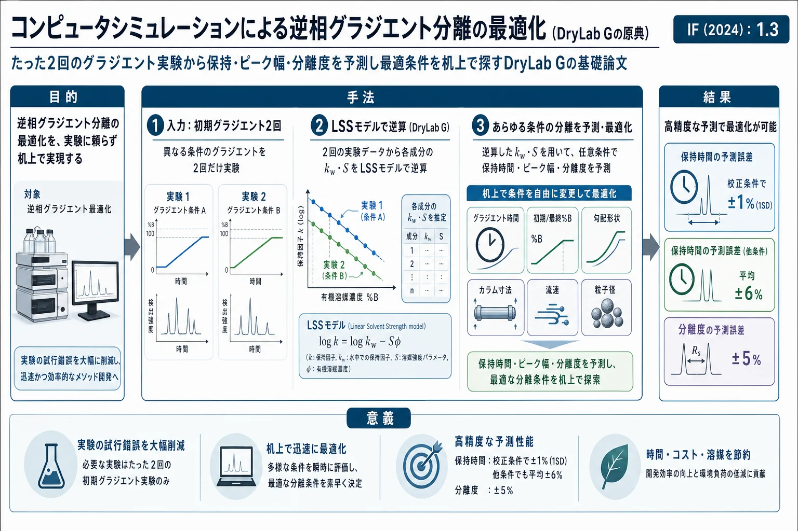

コンピュータシミュレーションによる逆相グラジエント分離の最適化（DryLab Gの原典）

<!-- 方針: ほぼ全訳＋必要に応じた補足。原文構成に沿って訳出。「> 補足:」は訳者注。数式は原文の式番号を保持。 -->
書誌情報
- 原題: Computer Simulation as a Means of Developing an Optimized Reversed-Phase Gradient-Elution Separation
- 著者: J. W. Dolan, L. R. Snyder（LC Resources Inc., 米国), M. A. Quarry（Du Pont社 Medical Products Dept., 米国）
- 掲載: Chromatographia 24 (1987) 261–276. https://doi.org/10.1007/BF02688488
- インパクトファクター: 1.3（Chromatographia, JCR 2024 / Clarivate）
- キーワード: グラジエント溶出／逆相／メソッド開発／コンピュータシミュレーション／保持予測
補足: 本論文は、後に広く普及する市販ソフト DryLab の基礎を築いた古典（1987年)。「実験を2回だけやれば、あとは計算機上で条件を変えて最適分離を探せる」という計算機支援メソッド開発の考え方の原点。生薬QCでも、指紋・多成分定量のグラジエント条件最適化に同種の手法（DryLab等)が今も使われる。用語: $k'$=保持係数、$\varphi$（原文 $\phi$)=移動相中の有機溶媒体積分率、$k_w$=純水中($\varphi=0$)の $k'$、$S$=溶質固有の定数、$t_g$=グラジエント保持時間、$t_G$=グラジエント時間、$t_D$=ドウェル時間、$t_0$=カラム死時間、$b$=グラジエント勾配パラメータ、$\bar{k}$=バンドがカラム中点にあるときの実効 $k'$、$N$=理論段数、$\alpha$=分離係数（選択性)。
要旨（Summary）
逆相グラジエント分離をシミュレートするパソコン用プログラム DryLab G を記述する。最初に2回の実験グラジエントを行えば、本プログラムでユーザーは、グラジエント条件（グラジエント時間・移動相の初期/最終%有機溶媒・グラジエント形状)・カラム寸法・流速・粒子径を変えて最終分離を作り込める。このアプローチは、等温分離で最近報告された「溶媒強度選択性」を活用する。この手順によるメソッド開発は、はるかに少ない労力でより良い分離をもたらす。バリデーションと応用の例を示す。
1. 序論（Introduction）
グラジエント溶出は多くの試料のHPLC分析に有用。広い保持範囲の混合物は等温では効果的に扱えず、狭い保持範囲でもグラジエントの方がよく分離することがある。かつては様々な理由からグラジエントを敬遠する人が多かったが、状況は変わりつつあり、将来はほとんどのラボで日常的に使われると期待される。
グラジエント法の開発・最適化の一般原理は既知だが、その潜在能力が実務で十分に活かされることは稀。技術本来が複雑で分離変数が多く、条件変更が予想外の結果と追加実験を招きがち。グラジエントを要する試料は成分数も多く、系統的なメソッド開発が難しい。効果的なグラジエント利用は、条件変更で生じるバンド間隔(選択性 $\alpha$)の変化を活かすべきである。市販ソフト DryLab G は、実験条件の関数として分離（各成分の保持時間 $t_g$ とバンド幅 $W$、そこから分離度)を予測できる。
2. 予測の理論
2.1 保持時間 $t_g$ の予測
グラジエント溶出の保持時間は積分方程式(式2)で与えられる：
$$\int_0^{t_g} \frac{F\,dt}{V_m(1 + k')} = 1 \tag{2}$$
$F$=流速、$V_m$=カラム死容積($=F t_0$)、$k'$=グラジエント中の時刻 $t$ における保持係数。複数区間のグラジエント（初期移動相での前溶出・最終移動相での後溶出を含む)では、各区間に式(2)の別形を適用して合成する。逆相HPLCでは $k'$ が有機溶媒体積分率 $\varphi$ と近似的に次式(LSSモデル)で関係する：
$$\log k' = \log k_w - S\varphi \tag{3}$$
$S$ は溶質固有の定数、$k_w$ は $\varphi=0$ での $k'$。この式を第一近似とし、$\log k'$ 対 $\varphi$ の小さな曲率は補正できる。
2.2 $k_w$ と $S$ の推定：2回の初期グラジエント
従来は $k'$ 対 $\varphi$ を等温測定で求めることが多かったが、グラジエントを要する試料は等温で調べにくく不便。より良い方法は、勾配の異なる2回の初期グラジエント実験を行い、そこから $k_w$ と $S$ を求めること。溶質の前溶出・後溶出を無視できる場合、2本のグラジエント($b=b_i, b_j$)の実測保持時間から次の連立方程式(式4a, 4b)を数値的に解く：
$$(t_g)_i = \frac{t_0}{b_i}\log(2.3\,k_0\,b_i + 1) + t_0 + t_D \tag{4a}$$
$$(t_g)_j = \frac{t_0}{b_j}\log(2.3\,k_0\,b_j + 1) + t_0 + t_D \tag{4b}$$
$t_D$=装置のドウェル時間（グラジエントがミキサーからカラム入口へ届くまでの時間)。勾配パラメータ $b$ は：
$$b = \frac{V_m\,\Delta\varphi\,S}{t_G\,F} \tag{5}$$
$\Delta\varphi$=グラジエント中の $\varphi$ 変化、$t_G$=グラジエント時間。グラジエント開始時の $k'$ を $k_0$ とし：
$$\log k_0 = \log k_w - S\varphi_0 \tag{6}$$
$\varphi_0$=開始時の $\varphi$。この手順はパソコン上で短時間に $k_w$・$S$ を与える（初期グラジエントで前溶出があるとより複雑になる)。
2.3 バンド幅 $W$ の予測
グラジエント溶出のバンド幅は次式で与えられる：
$$W = t_0(1 + k_f)\,J\,G\,N^{-1/2} \tag{7}$$
$k_f$=バンドがカラムを出る時点の $k'$、$N$=段数、$G$=グラジエント「圧縮係数」、$J$=急峻なグラジエントで生じる異常なバンド拡がりの補正係数。実験の $J$ と計算の $G$ の積は、$b$ の全域で $JG \approx 1.1 \pm 0.1$（式8)となるため、式(7)は近似的に：
$$W \approx 1.1\,t_0(1 + k_f)\,N^{-1/2} \tag{9}$$
と書ける（他者の実験データとも概ね一致)。バンドがカラムを出る時の $k_f$ は：
$$k_f = \frac{1}{2.3b + (1/k_0)} \tag{10}$$
式(9)の $N$ は、グラジエントの実効 $k'$（バンドがカラム中点にあるときの $\bar{k}$)が等温 $k'$ に等しい「対応する等温系」で測った段数で、条件と各溶質の分子量から予測できる。
2.4 グラジエント溶出の分離度制御
グラジエントの分離度も、等温と同じ因子（保持係数 $\bar{k}$・段数 $N$・分離係数 $\alpha$)の関数で表せる：
$$R_s = \frac{1}{4}(\alpha - 1)\,N^{1/2}\left[\frac{\bar{k}}{1+\bar{k}}\right] \tag{11}$$
従来の議論は $N$ と実効 $\bar{k}$ の重要性を強調してきた（グラジエント条件を系統的に変えて $N$・$\bar{k}$ を動かし、ピーク容量と全体分離度を最大化する)。しかし著者らは、バンド間隔（$\alpha$ の値)の変化も分離最適化で同等に重要と考える。等温で $\alpha$ を制御する全変数（有機溶媒の種類、pH、温度、固定相の変更など)はグラジエントでも同様に使える。メソッド開発の初期段階では、グラジエント条件を変えて $\bar{k}$ を変えることで $\alpha$ を都合よく変えられる。実効保持は：
$$\bar{k} = \frac{1}{1.15\,b} \tag{12}$$
流速やグラジエント時間だけでなく、$\varphi$ の変更や複雑なグラジエント（勾配の異なる直線区間の組合せ) でも同様のバンド間隔変化が得られ、これがグラジエントにおけるバンド間隔の大きな制御余地を与える。
3. 実験（Experimental）
- 装置: DuPont 8800 液体クロマトグラフ、Model 860 固定波長(254 nm)検出器、カラムオーブン。
- 試料: 多環芳香族炭化水素混合物(Supelco)、除草剤混合物(DuPont農薬部門。一部は組成非開示)、およびフタル酸エステル・ステロイド・OPAアミノ酸（後述)。
- シミュレーション: すべて IBM XT パソコン上で DryLab G ソフト(LC Resources)を使用。
4. 結果と考察（Results and Discussion）
4.1 グラジエント保持予測の精度
本研究は、初期グラジエント2回から導いた $k_w$・$S$ による $t_g$ 予測の精度に注目する。これらは主に分離度予測(式1)に使うため、個々の $t_g$ より相対保持 $(t_2-t_1)$ の精度が重要。DryLab G は (a) $k_w$・$S$ 導出に使うグラジエントデータ、(b) 予測する $t_g$ の双方について前溶出効果を補正する。
フタル酸エステル試料: 文献の5種のC1–C5ジアルキルフタル酸エステルのデータから、$t_G=20$ 分と80分の2ランを入力に選んだ（最大精度には2つの $t_G$ を3倍以上離すのが望ましい)。他の $t_G$ での計算結果(Table I)は、ほぼ理想的条件（1溶質1ランを除き全バンドがグラジエント中に溶出、前溶出寄与ほぼ無視)。補間条件($20<t_G<80$、例 $t_G=40$分)では、保持時間・分離度とも 約 ±1%（1SD) で予測。その他の $t_G$（5, 10, 160, 320分)では、保持時間は平均 ±6%（1SD)、分離度は ±5% で予測。メソッド開発で実グラジエントの代わりに使うには十分。なおこの一致は、同じグラジエントデータから予測した等温値より良く、グラジエントデータはグラジエント保持の予測に向く（逆に等温データは等温予測に向く。最高精度が要るなら、入力実験を予測手法(等温/グラジエント)に合わせるべき)。
ステロイド試料: 6成分（prednisone・cortisone・hydrocortisone・dexamethasone・corticosterone・cortexolone。Zorbax ODS 25×0.46 cm、5–100% メタノール/水、流速 2 mL/min、ドウェル容積 $V_D=5.5$ mL)。Fig. 1 の $t_G=30$・90分を入力とし、グラジエント時間だけでなく初期/最終 $\varphi$ も変えて、大きな前溶出（例: バンド#3は初期移動相55%MeOH中でカラムの79%を移動、#4は46%・#5は40%・#6は35%)がある場合を試験(Table II)。$t_g$ は平均 ±3%（1SD)、分離度$(t_2-t_1)$ は平均 ±7%（1SD) で予測。
実務上の注意: 入力実験には大きめの $t_G$（大きめの $\bar{k}$) を使う方がよい。Table II の15分・45分ランを入力にすると、残りの予測分離度の誤差は ±11%（1SD)（Table II比で50%増)に悪化する。このとき $t_g$ の誤差は ±2% と小さいが、これは単独で見ると誤解を招く——分離度予測の精度を決めるのは $(t_2-t_1)$ の精度だからである。
4.2 コンピュータシミュレーションに基づく系統的メソッド開発
計算機シミュレーションが試行錯誤の実ランに代わることで、条件変更に対する分離を評価しながら、従来と同じ流儀でグラジエント分離を開発・改良できる。しかもシミュレーションは実ランのごく一部の時間で済むため、はるかに多くの可能性を探索できる。DryLab G の経験から進化した系統的手順(Table III の6ステップ)を、例で示す。
OPAアミノ酸混合物の例: Eslami らの、逆相HPLC(17–55% アセトニトリル/水 直線グラジエント)による22種の o-フタルアルデヒド(OPA)アミノ酸の分離データ（$t_G$ とカラム長を変えた32ラン／5カラム長)を DryLab G で評価。最適法開発を想定し、Table III の6ステップに従う。ステップ1: まず2グラジエント($t_G=15$分・35分)を実行(Fig. 2a/b)。各クロマトグラムに22の明瞭なバンド（未分離ペアなし)。2回目のランの各バンドを1回目のバンド順に対応づけて番号付けする（同一化合物が同じ番号になるように)。以降のステップで、$t_G$・カラム長・流速・グラジエント範囲・複雑グラジエントなどを机上で変えて分離度を最大化し、最後に最適条件を実測で確認する（本文にさらに $t_g$ 予測精度の例が続く)。
5. 結論
わずか2回の初期グラジエント実験から各成分の $k_w$・$S$ を求め、あとは計算機上でグラジエント時間・組成・形状・カラム寸法・流速・粒子径を変えて保持時間・バンド幅・分離度を予測・最適化できる。従来の試行錯誤に比べ、はるかに少ない実験でより良い分離に到達できる。バンド間隔（選択性 $\alpha$)の変化を活かす「溶媒強度選択性」の利用が鍵。予測精度は、補間条件で保持・分離度とも約±1%、外挿・前溶出を含む条件でも保持±3〜6%・分離度±5〜7%で、メソッド開発の実用に十分である。
補足（生薬QC実務への示唆）: これは現在の DryLab 等「計算機支援メソッド開発」の出発点にあたる論文で、実務上の含意は今も有効。①指紋・多成分定量のグラジエント最適化を“実験2回＋あとは計算”で進められる——多成分で試行錯誤が膨れがちな生薬分析で威力を発揮する。②入力は勾配の異なる2グラジエント（$t_G$ を3倍以上離し、大きめの $t_G$ を選ぶと分離度予測が安定)。ここから各成分の $k_w$・$S$ を逆算し、条件を振って臨界ペアの分離度を予測する。③予測で見るべきは個々の保持時間より相対保持 $(t_2-t_1)$——分離度の精度を決めるのはこちら。④精度は補間条件で±1%、外挿・前溶出込みでも数%〜±7%程度と割り切り、最後は必ず実測で確認する運用が前提（本サイト収録の保持モデリング総説が指摘する「手法開発は予測誤差1%以内が理想」という後年の要求水準と読み合わせると、モデルの近似限界も見えてくる)。⑤$\log k'$–$\varphi$ の直線(LSS)は近似で、低・高 $\varphi$ 域では曲率が出るため、必要なら二次・NKモデルで補正する。⑥ピーク数の多いアミノ酸22成分の例のように、各バンドの対応づけ(ピークトラッキング) が前提になる点は、生薬の複雑指紋でも同じ実務課題である。